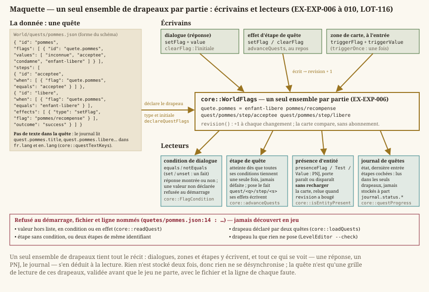

Exploration
Statut : en cours. Le déplacement, la collision et l'orientation sont livrés (
LOT-06), le vocabulaire de terrain aussi (LOT-08), les portails relient les cartes (LOT-09), et le monde se souvient de ce que le joueur a fait (LOT-116). Ce qui manque est le déclenchement d'une rencontre sur la carte (LOT-118). Dépend dearchitecture.md(conventions de monde) et deniveaux.md(couche de collision).
L'exploration est la moitié « temps réel » du jeu : un personnage parcourt une carte, sans tour ni initiative, jusqu'à ce qu'une rencontre bascule la partie en combat tactique (LOT-18). Ce document porte les exigences de ce déplacement — ce que le combat en fera, à la case et au tour, relève de sa propre spécification.
Deux mécanismes font sortir le joueur d'une carte, et ce sont les seuls : le portail, qui mène à une autre carte, et la rencontre, qui fige le temps sans changer de lieu. La maquette ci-dessous les montre sur une carte réelle de la démo.

Ce que la maquette rend visible : un portail nomme sa destination — une carte et un point d'arrivée — au lieu de pointer des coordonnées, ce qui permet de redimensionner la carte cible sans casser l'arrivée ; et la bascule en combat ne déplace personne, elle découpe une grille là où le joueur se trouve déjà.
1. Déplacement
- EX-EXP-001 — Le personnage doit se déplacer librement en 8 directions, sans gravité : aucun axe n'est privilégié, marcher vers le haut va exactement aussi vite que marcher vers la droite. La vitesse est isotrope — l'intention de déplacement est normalisée avant d'être mise à l'échelle, faute de quoi la diagonale vaudrait
√2 ≈ 1,41fois la vitesse cardinale, le défaut le plus courant du genre et le plus visible en jeu. Le départ et l'arrêt passent par une accélération et une friction réglables ; intention relâchée, le personnage s'arrête net, sans dérive résiduelle — dans un jeu où l'on se place à la case près (la grille tactique duLOT-19), glisser au-delà de la case visée est insupportable. Concrétisé enLOT-06.
- EX-EXP-002 — Le personnage ne doit jamais traverser une case bloquante, quelle que soit sa vitesse : le déplacement est résolu par un balayage continu contre la grille, jamais par un simple test de la position d'arrivée. La grille qui fait foi est la couche de collision de la carte (
EX-LVL-016), pas ce qui est dessiné : un tapis se traverse, un tonneau non, et les deux peuvent reposer sur la même image de sol. Concrétisé enLOT-06.
- EX-EXP-003 — Un obstacle pris en biais doit laisser glisser le long de sa surface : la composante bloquée s'annule, l'autre continue d'avancer. Sans cela, la moindre diagonale contre un mur immobiliserait complètement le personnage, et longer une paroi demanderait de corriger sa direction au pixel près. La vitesse de l'axe bloqué est remise à zéro plutôt que conservée : autrement, pousser contre un mur accumulerait un élan qui catapulterait le personnage dès la fin de l'obstacle. Concrétisé en
LOT-06.
- EX-EXP-004 — Le personnage doit porter une orientation, mise à jour par sa marche et conservée à l'arrêt : un personnage immobile regarde là où il allait, jamais vers une direction par défaut. C'est cette orientation que liront le choix du sprite (
LOT-08), l'interaction avec ce qui est devant (LOT-10) et l'attaque au corps à corps (LOT-21) — d'où un vecteur, et non le simple gauche/droite d'un jeu en vue de côté. Concrétisé enLOT-06.
- EX-EXP-005 — Une carte doit disposer d'un vocabulaire de terrain : des sols (herbe, terre, sable, eau), des obstacles (mur, falaise) et des passages (pont, escalier). Chaque type déclare lui-même s'il arrête ou non — c'est ce test unique, et non une liste éparpillée de cas particuliers, qui décide de la traversée (
EX-EXP-002). L'eau profonde arrête tant qu'aucune règle de nage n'existe : la distinction d'avec l'eau peu profonde est la seule chose qui permette à une rive d'exister. Aucun type ne peut être ajouté sans son repli procédural : le jeu doit afficher une carte lisible sans qu'aucun fichier d'image ne soit présent (EX-NFR-040), et une case laissée sans couleur serait indiscernable de ses voisines. Concrétisé enLOT-08.
2. Repères d'échelle
Une case vaut 1,5 m (5 ft), l'unité tactique du système d20, que la grille de combat du LOT-19 reprend telle quelle. La marche va à 2 cases par seconde, soit 3 m/s (core::ExplorationSession::WALK_SPEED_CELLS_PER_SECOND) : une marche vive, pas la vitesse réelle d'un marcheur — l'exploration doit rester agréable à la manette, pas simuler une randonnée. Elle allait à 4 cases par seconde avant le LOT-112 ; c'est la figurine peinte qui a tranché.
- EX-EXP-011 — La vitesse de marche est 2 cases par seconde, et un cycle de marche de la figurine couvre une case : la cadence des images se lit dans la bande d'animation (
frameDuration,EX-REN-012), jamais dans une constante du code. À 4 cases par seconde, des pieds qui ne glissent pas demandaient une image toutes les 31 ms ; le déplacement et l'animation sont un seul réglage, sans quoi l'un des deux ment toujours. L'orientation vectorielle (EX-EXP-004) se projette sur la diagonale peinte la plus proche — quatre bandes, une par diagonale isométrique — et, quand deux directions sont tenues, la diagonale courante est gardée plutôt que de battre entre deux.
3. La mémoire du monde : drapeaux et quêtes
Le jeu se souvient de ce que le joueur a fait par des drapeaux de monde — et de rien d'autre : une quête, un PNJ qui paraît, une porte qui s'ouvre se lisent dans les drapeaux, jamais dans un état tenu à part que la sauvegarde devrait apprendre à écrire. Concrétisé en LOT-116 ; la quête de la démo est au LOT-120, la sauvegarde en 0.0.3.
{kind=link}

La maquette dit l'essentiel : il n'y a qu'un endroit où le monde se souvient, et tout le reste — l'étape atteinte, le PNJ qui paraît, la porte qui se condamne — se relit dans cet endroit-là. La sauvegarde n'aura que lui à écrire.
- EX-EXP-006 — Un drapeau de monde est un fait acquis (présent ou absent) ou, s'il est déclaré par une quête, une valeur parmi une liste fermée, avec une valeur initiale. Une valeur hors de la liste est refusée, et ne change rien. Les drapeaux vivent à côté des entités et survivent au changement de carte. Il n'en existe qu'un ensemble par partie : ce que pose un dialogue, la carte le lit.
- EX-EXP-007 — Une quête est une donnée (
World/quests/<id>.json) : les drapeaux qu'elle déclare, et des étapes dans l'ordre du récit, chacune atteinte dès que toutes ses conditions tiennent, une seule fois, et pouvant poser des drapeaux et clore la quête (réussite, échec). Elle ne porte aucun texte : titre et étapes ont des clés fabriquées, présentes en français et en anglais. - EX-EXP-008 — Les quêtes sont lues et validées au démarrage. Un fichier mal formé est refusé, toutes ses erreurs listées d'un coup, chacune nommant le fichier et la ligne ; une valeur de drapeau qu'aucune déclaration ne permet, dans une quête ou un dialogue, est relevée. La partie reste jouable (
EX-NFR-040). - EX-EXP-009 — Une entité de carte peut porter une condition de présence sur un drapeau (test d'existence, d'égalité ou de différence à une ou plusieurs valeurs). Absente sous les drapeaux, elle ne se voit pas et ne répond pas ; elle paraît ou disparaît dès que le drapeau change, sans que la carte soit rechargée. Une condition mal formée laisse l'entité présente.
- EX-EXP-010 — Le journal de quêtes montre les quêtes commencées et leur état, l'entrée la plus récente de la quête choisie et ses étapes atteintes, tirés des seuls drapeaux ; il se parcourt au clavier et à la manette. Sa maquette est dans
interface-ihm.md. - EX-EXP-012 — L'avancement d'une quête n'est stocké nulle part : l'état (non commencée, en cours, réussie, échouée) et les étapes atteintes se recalculent depuis les drapeaux, à chaque changement de leur révision (
core::WorldFlags::revision). Deux mémoires de la même chose — un compteur d'étape et les drapeaux — divergent au premier rechargement, et c'est celle qu'on n'a pas sauvegardée qui gagne. Un effet d'étape peut en atteindre une autre : l'avancement se rejoue jusqu'au repos, et termine parce qu'une étape ne s'atteint qu'une fois.